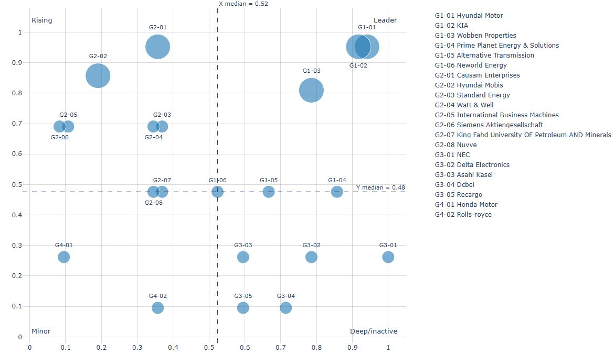

V2G – Applicant Analysis
Vehicle-to-Grid (V2G) is transitioning from technical validation to an operable market. The key is to aggregate geographically distributed EV batteries into dispatchable capacity and coordinate charging/discharging within designated time windows so as to satisfy both grid stability and user experience. Aggregation over the past five years indicates a total of 31 patents with 21 applicants participating, and a combined weighted activity score of 96. Under a four-quadrant assessment, the top three in quadrant G1 are Hyundai Motor Company, Kia Corporation, and Wobben Properties GmbH, reflecting the concurrent positioning of automakers and energy-technology right holders. The distribution of other applicants is shown in the “Applicant Analysis Chart” below.
Hyundai Motor Company: Diagnostics, Protection, and Operations in Parallel
Hyundai’s patent trajectory concentrates on three areas: (i) US20250196708A1 acquires and validates battery state via a charging controller and decides whether to discharge for sale or charge by import accordingly; (ii) US20250062620A1 places two relays in the on-board charger and coordinates their opening upon a V2G protection trigger, ensuring both timeliness and sequence; and (iii) US20230382262A1 schedules charge/discharge according to time-of-use tariffs and vehicle condition on a server side to estimate revenue while maintaining a target state of charge (SoC), thereby improving operational efficiency.
Industry developments are aligned with these patent directions. On one front, cooperation with Jeju Province advances green hydrogen, distributed energy, and commercial V2G to build a demonstrative renewable–EV interaction ecosystem ( The Korea Times; MK Business). On another front, Hyundai and Kia jointly invested in WeaveGrid to strengthen cloud-based management for bidirectional services driven by connected-vehicle data—covering charge/discharge dispatch and demand response ( WeaveGrid press release). In Europe, Hyundai cooperates with the Netherlands’ We Drive Solar to deploy a bidirectional IONIQ 5 car-sharing fleet supporting “bidirectional city” experiments, validating discharge revenues under time-of-use pricing and community storage benefits ( Hyundai Europe). Academic/industry reports further note that IONIQ 5 implements an 11 kW charge / 5 kW discharge bidirectional OBC and has undergone long-term field testing, underscoring the importance of on-vehicle diagnostics, coordinated relay interruption, and interconnection control ( IEEE Power & Energy Magazine PDF).
Kia Corporation: Co-Development and Cloud Platforms Driving Commercialization
Kia’s patents are jointly filed with Hyundai, indicating an integrated V2G strategy spanning from vehicle-side hardware to cloud scheduling. Industrially, both companies made a joint strategic investment in the U.S.-based grid-integration software company WeaveGrid in January 2025. The platform features smart charging, load management, and grid-interaction control—including V2G and demand response—enabling dynamic discharge strategies according to time-of-use tariffs, grid demand, and remaining energy. The move complements existing V2G R&D and is intended to reinforce commercialization capability as regulations open in North America, Europe, and Asia ( PR Newswire; The EV Report).
Wobben Properties GmbH: Fleet Availability and Power Coordination at the Core
Wobben’s three U.S. patents focus on fleet-level availability management and power coordination: US12252028B2 constructs a time series of total energy based on vehicle arrival/departure predictions for grid-exchange planning; US12311797B2 forms an exchange power curve according to energy settings and power limits, allocating partial power per vehicle considering its SoC and individual constraints; and US12311799B2 dynamically controls charge/discharge during service provision using a permissible range of fleet SoC and arrival-time predictions, with probabilistic corrections to enhance system-service stability and storage availability.
Conclusion
In overview, Hyundai and Kia advance along two tracks—vehicle-side protection mechanisms and cloud-based operational strategies—while Wobben approaches from aggregation, dispatch, and availability assurance. The three are technically complementary. As bidirectional metering, standardized protocols, and market mechanisms mature, V2G will scale beyond pilots. Vehicles, parking facilities, and communities will emerge as critical storage nodes near the load side, opening new possibilities for city-level grid resilience.